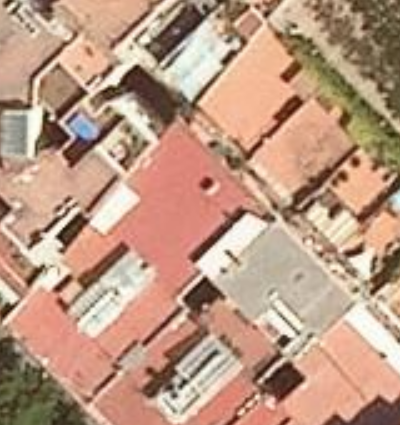
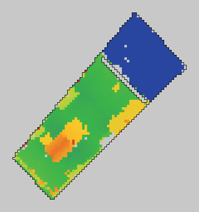
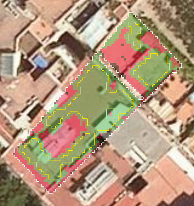
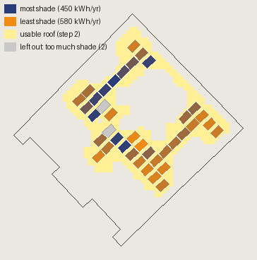

The problem
Barcelona generates 6,199 GWh a year, about 93% of what it uses. Only 1.2% of it is renewable.
Our tool finds the roofs that make the most energy per panel, puts the panels there, and lets the neighbours within 500 m co-invest and buy a fixed share of the output. Source: Barcelona Energy Observatory.
-
Step 1
Find the building
Every plot of the 9 blocks from Catastro: its outline, age, floors and homes, and whether the roof is flat.
Catastro · ICGC LiDAR
-
Step 2
Read the roof



Photo, LiDAR height, reading. Everything that sticks out of the roof (stairs, tanks, AC units) is a place where panels cannot go.
AI: U-Net with a ResNet-34 encoder (pretrained on ImageNet), fine-tuned on our labelled roofs · training next
ICGC LiDAR · ICGC orthophoto · Roger de Llúria 56
-
Step 3
Place the panels

Rows of 1.76 × 1.13 m panels on the usable roof, tilted 10° towards the side closest to south, spaced so they don't shade each other in winter.
Our layout · Carrer del Bruc 59
-
Step 4
Shade and energy
Every hour of a typical year, with shade from neighbours, trees and rooftop structures. Panels that lose more than 40% of their sun are left out.
PVGIS · ICGC LiDAR (150 m around)
-
Step 5
Communities
Panels go on the 10 roofs with the most energy per panel. Neighbours within 500 m co-invest and buy a fixed share of the output: flats (40% assumed to join), offices and schools.
Catastro · Open Data BCN · RD 244/2019